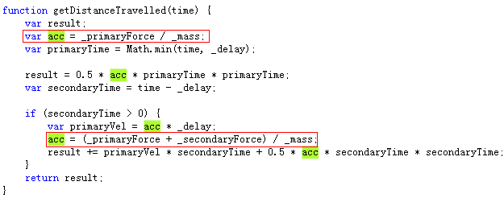
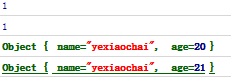

前言
重构过程中，还是有一定标准可循的，每个重构手法有如下五个部分：
首先是名称（name），建造一个重构词汇表，名称是非常重要的 然后是一个简短概要，介绍重构手法适用的场景，以及他干的事情，这样我们可以快速找到所需重构方法
然后，介绍为什么需要这个重构，或者什么情况下适用这个重构做法，简明扼要的介绍如何一步步重构
最后，以一个十分简单的例子说明此重构如何运作
所以今天我们进入重构的学习吧！
提炼函数
我们重构是，重头戏就是处理函数，以js而言，函数重要性更是终于“类”的概念。
如何恰当的包装代码，如何减少过长的代码，这是我们多数时刻需要思考的。
但是要消除函数过长是不易的，一个函数过长说明这个函数所完成的业务很复杂，而且可能关联性很高，要将这样的代码拆分，就不止是重构的事情了
在此提炼函数变得十分考验一个人的水平，如何将一段代码从原先函数提取出来，如何将一个单数调用替换为函数本体，这些都不简单
最后改完，时常发现提炼的某些函数实际意义不大，我们还得考虑如何回溯原来的函数
难在何处
提炼函数不易，难在处理局部变量，临时变量尤其突出
处理一个函数时，我们可以先使用查询取代变量的方法取代临时变量
如果一个临时变量多次使用，可以使用分解临时变量的方法将它变得容易替换
但是，多数时候临时变量确实混乱，难以替换，这时候我们可以使用以函数对象取代函数的方法，这样的代价就会引入新类
参数带来的问题比临时变量少一点，前提是不在函数内为他赋值（不对参数赋值，对js来说就是一个传说，因为我们队参数赋值可以保证程序更健壮），但是移除对象赋值，也许能带给你不一样的感受
说了这么多，我们来好好审视下，我们的一些手段吧！！！
光说无码不行，我们先上一个例子，我们现在将这段代码放到一个独立的函数中，注意函数名需要解释函数用途哦
1 var log = function (msg) { console.log(msg); }; 2 3 var printOwing = function (amount) { 4 printBanner(); 5 log('name:' + _name); 6 log('amount:' + _amount); 7 }; 8 9 var printOwing = function (amount) { 10 printBanner(); 11 printDetails(amount) 12 }; 13 14 var printDetails = function (amount) { 15 log('name:' + _name); 16 log('amount:' + _amount) 17 };
这是比较常见的重构手法，当我们看到一个过长的函数或者一段需要注释才能看懂的代码时，这段代码可能就需要放进独立的函数了
如果每个函数的粒度都很小，那么函数被复用的机会就大，这样高层函数看上去就像被函数名注释似的，这样函数复写也相对简单
如何做？
① 创造一个新函数，根据这个函数的意图来对它命名（以它“做神马”来命名，而不是以它"怎么做"命名）
PS：即使我们要提炼的代码非常简单，哪怕只是一个消息或者一个函数调用，只要新函数能更好的表示代码意图，就可以提炼，否则就不要动他了
② 将提炼的代码拷贝到新建函数中
③ 检查提炼的代码，看看其中是否引用了“作用域限于原函数”的变量（局部变量、原函数参数）
④ 检查是否包含“仅用于被提炼代码段”的临时变量，如果有，在目标函数中将之声明为局部变量
⑤ 检查被提炼代码段，看看是否有任何局部变量的值被他改变，如果一个临时变量的值被修改了，看看是否可以将提炼的代码变为一个查询，将结果给相关变量
如果这样不好做，或者被修改的变量不止一个，拷贝的方式可能就不适用了，这个时候可能还需要用到（分解临时变量/以查询替换变量）等手段了
⑥ 将被提炼代码段中需要被读取的局部变量，当参数传给目标函数
⑦ 处理结束后检查测试之，便结束！
好了，我们再来几个例子
无局部变量
1 var log = function (msg) { console.log(msg); }; 2 var printOwing = function (amount) { 3 //var productList = [];//这个数据你懂的 4 var outstanding = 0; 5 log('*****************'); 6 log('****Cunstomer Owes*****'); 7 log('*****************'); 8 9 for (var k in productList) { 10 outstanding += productList[k].getAmount(); 11 } 12 13 log('name:' + _name); 14 log('amount:' + outstanding); 15 };
这个重构比较简单
1 var printOwing = function (amount) { 2 //var productList = [];//这个数据你懂的 3 var outstanding = 0; 4 printBanner(); 5 6 for (var k in productList) { 7 outstanding += productList[k].getAmount(); 8 } 9 10 log('name:' + _name); 11 log('amount:' + outstanding); 12 }; 13 14 var printBanner = function () { 15 log('*****************'); 16 log('****Cunstomer Owes*****'); 17 log('*****************'); 18 };
但是没有局部变量只是一个传说，比如上处最后log的内容，于是来一个（简单的）
1 var printOwing = function (amount) { 2 //var productList = [];//这个数据你懂的 3 var outstanding = 0; 4 printBanner(); 5 6 for (var k in productList) { 7 outstanding += productList[k].getAmount(); 8 } 9 10 printDetails(outstanding); 11 }; 12 13 var printBanner = function () { 14 log('*****************'); 15 log('****Cunstomer Owes*****'); 16 log('*****************'); 17 }; 18 19 var printDetails = function (outstanding) { 20 log('name:' + _name); 21 log('amount:' + outstanding); 22 }
PS：此处的_name，在js里面应该是this._name
这个也相对比较简单，如果局部变量是个对象，而被提炼代码调用了会对该对象造成修改的函数，也可以这样做，只不过需要将这个对象作为参数传递给目标函数，只有在被提炼函数会对变量赋值时，有所不同，下面我们就会看到这个情况。
局部变量赋值
这个情况较复杂，这里我们看看临时变量被修改的两种情况，
比较简单的情况是这个变量只在被提炼代码段中使用，这样源代码中的这个变量就可以被消除，
另一种情况就是源代码中改了，提炼处代码也改了， 这个时候如果是之前改的就不用管了，之后会发生变化需要返回这个值。
这里我们将上述代码计算的代码提炼出来：
1 var log = function (msg) { console.log(msg); }; 2 var printOwing = function (amount) { 3 //var productList = [];//这个数据你懂的 4 printBanner(); 5 printDetails(getOutStanding()); 6 }; 7 8 var printBanner = function () { 9 log('*****************'); 10 log('****Cunstomer Owes*****'); 11 log('*****************'); 12 }; 13 14 var printDetails = function (outstanding) { 15 log('name:' + _name); 16 log('amount:' + outstanding); 17 }; 18 19 var getOutStanding = function () { 20 var result = 0; 21 for (var k in productList) { 22 result += productList[k].getAmount(); 23 } 24 return result; 25 };
这个例子中outstanding变量只是单纯被初始化一个明确的值，但如果其他地方做过处理，就必须作为参数传入
1 var log = function (msg) { console.log(msg); }; 2 var printOwing = function (amount) { 3 //var productList = [];//这个数据你懂的 4 var outstanding = amount * 2; 5 outstanding = getOutStanding(outstanding) 6 printBanner(); 7 printDetails(getOutStanding()); 8 }; 9 10 var printBanner = function () { 11 log('*****************'); 12 log('****Cunstomer Owes*****'); 13 log('*****************'); 14 }; 15 16 var printDetails = function (outstanding) { 17 log('name:' + _name); 18 log('amount:' + outstanding); 19 }; 20 21 var getOutStanding = function (result) { 22 result = result || 0;//注意这种写法如果result为0可能导致我们程序BUG，所以数字要注意 23 for (var k in productList) { 24 result += productList[k].getAmount(); 25 } 26 return result; 27 };
如果其中改变的变量不止一个，就返回对象变量吧，这个东西就暂时说到这里了，后面看实例吧。
内联函数
该方法用于消除函数，先来个代码看看
1 var getRating = function () { 2 return moreThanFive() ? 2 : 1; 3 }; 4 5 var moreThanFive = function () { 6 return num > 5; 7 } 8 9 var getRating = function () { 10 return num > 5 ? 2 : 1; 11 };
本来我们常以简单的函数表现动作意图，这样会使代码更为清晰，但有时候会遇到某些函数，内部代码很简单，这种情况就应该去掉这个函数
PS：这个界限不是很好把握，另一种情况是手上有一群组织不合理的函数，我们可以将它组织到一个大函数中，再从新提炼成小函数，这种情况更多见。
如果我们使用了太多中间层，使得系统所有的函数都是对另一个函数的委托，这个时候，函数会让我们晕头转向，这个时候可以去掉中间层
如何做？
① 检查函数，确定其不具有多态（如果有继承关系就不要搞他了）
② 找出函数所有调用点
③ 复制为函数本体
④ 检查，删除函数本身
内联函数比较复杂，递归调用，多返回点，
内联临时变量
你有一个临时变量，只被一个简单的表达式赋值一次，而他影响了其它重构手法，那么将所有对该变量的引用动作，替换为对它赋值的那个表达式自身
1 var basePrice = anOrder.basePrice(); 2 return basePrice > 100; 3 4 return anOrder.basePrice() > 100
以查询取代临时变量
这个方法比较实用，程序以一个临时变量保存某一个表达式的结果时，那么将这个表达式提炼到一个独立的函数中
将这个临时变量的变量的所有引用点替换为新函数的调用，这样的话，新函数就可以被其它函数使用了
1 function amount() { 2 var basePrice = _quantity * _itemPrice; 3 if (basePrice > 1000) return basePrice * 0.95; 4 else return basePrice * 0.98; 5 } 6 7 8 function amount() { 9 if (basePrice() > 1000) return basePrice() * 0.95; 10 else return basePrice() * 0.98; 11 } 12 13 function basePrice() { 14 return _quantity * _itemPrice; 15 }
这样做的好处是，消除临时变量，因为临时变量是暂时的，只能存在所属函数，所以为了能够访问到变量，有可能我们会写出更长的函数，
如果把临时变量替换为一个查询，那么同一个类中的所有函数都可以获得这个数据，类的结构会更加清晰
查询替换变量一般会在提炼函数时候用到，该方法要用好还是不易的
怎么做？
① 找出只被赋值一次的临时变量（多次赋值需要分解临时变量了），注意这在js中可能不易
② 提炼临时变量等号右边到独立函数
③ 测试
我们常常使用临时变量保存循环中的信息，这个情况下就把整个循环提炼出来，
PS：这个时候我们可能会关心性能问题，据说这个性能不会对我们的程序有多大的影响
1 function getPrice() { 2 var basePrice = _quantity * _itemPrice; 3 var discountFactor; 4 if (basePrice > 1000) 5 discountFactor = 0.95; 6 else 7 discountFactor = 0.98; 8 } 9 此时我们想替换两个临时变量 10 function getPrice() { 11 return basePrice() * discountFactor(); 12 } 13 14 function basePrice() { 15 return _quantity * _itemPrice; 16 } 17 18 function discountFactor() { 19 return basePrice() > 1000 ? 0.95 : 0.98 20 }
引入解释性变量
如果我有一个复杂表达式，将该表达式（或者一部分）的结果放进一个临时变量，将此临时变量名用来解释表达式用途
1 if(platform.toLocaleUpperCase().indexOf('MAC') > -1 && location.href.toLocaleUpperCase().indexOf('IE') > -1 && ......){ 2 //do someting 3 } 4 5 这种很长的条件判断很难读，这个时候临时变量反而能帮助你阅读 6 var isMac = platform.toLocaleUpperCase().indexOf('MAC') > -1; 7 var isIE = location.href.toLocaleUpperCase().indexOf('IE') > -1;//这个代码有问题，不必关注 8 9 if(isMac && isIE && ......){ 10 //do someting 11 }
但有个问题是，原作者并不推荐增加临时变量，所以，一般我们就会提炼为函数了，这样也增加重用性
分解临时变量
我们的程序有某个临时变量被赋值超过一次，他既不是循环变量又不被用于收集计算结果，那么针对每次赋值新建一个对应的临时变量
1 var temp = 2 * (_height + _width); 2 temp = _height * _width; 3 4 var perimeter = 2 * (_height + _width); 5 var area = _height * _width;
这样做的好处，其实就是为了避免一个变量被无意义多次使用
除了循环变量或者用于收集结果的临时变量应该被多次使用，还有一些临时变量用于保存冗长的结果会被稍后使用
如果一个变量被赋值超过一次，那么他就担任了过多的职责了 其实这样做的好处，是为了我们方便提炼函数，或者以查询替换变量的操作
1 function getDistanceTravelled(time) { 2 var result; 3 var acc = _primaryForce / _mass; 4 var primaryTime = Math.min(time, _delay); 5 6 result = 0.5 * acc * primaryTime * primaryTime; 7 var secondaryTime = time - _delay; 8 9 if (secondaryTime > 0) { 10 var primaryVel = acc * _delay; 11 acc = (_primaryForce + _secondaryForce) / _mass; 12 result += primaryVel * secondaryTime + 0.5 * acc * secondaryTime * secondaryTime; 13 } 14 return result; 15 }
按照作者的话来说，这真是丑陋的代码啊，我反正抄都抄了很久

这个是一个物理中的一个神马公式我给忘了
见图，acc被两次赋值，第一次是为了保存第一次力造成的初始速度，
第二次保存两个力共同作用造成的加速度，这里我们使用final替换第二次的结果
1 function getDistanceTravelled(time) { 2 var result; 3 var acc = _primaryForce / _mass; 4 var primaryTime = Math.min(time, _delay); 5 6 result = 0.5 * acc * primaryTime * primaryTime; 7 var secondaryTime = time - _delay; 8 9 if (secondaryTime > 0) { 10 var primaryVel = acc * _delay; 11 var final = (_primaryForce + _secondaryForce) / _mass; 12 result += primaryVel * secondaryTime + 0.5 * final * secondaryTime * secondaryTime; 13 } 14 return result; 15 }
然后我们再使用下其它手段试试： ①提炼函数，②以查询取代变量
PS：我知道了力/质量=重力加速度
function getDistanceTravelled(time) { var result = 0.5 * accelerationOfGravity(_primaryForce, _mass) * primaryTime(time, _delay); if (secondaryTime() > 0) { result += primaryVel(_primaryForce, _mass) * secondaryTime() + 0.5 * final(_primaryForce, _secondaryForce, _mass) * secondaryTime() * secondaryTime(); } return result; } function accelerationOfGravity(force, mass) { return force / mass; } function primaryTime(time, _delay) { return Math.min(time, _delay) * Math.min(time, _delay); } function secondaryTime() { return time - _delay; } function primaryVel(_primaryForce, _mass) { return accelerationOfGravity(_primaryForce, _mass) * _delay; } function final(_primaryForce, _secondaryForce, _mass) { return (_primaryForce + _secondaryForce) / _mass; }
下面是我完成不理解程序情况下胡乱意淫改的，不必在意
移除参数赋值
代码对一个参数赋值，那么以一个临时变量取代该参数位置（这对js不知道好使不）
1 function discount(inputVal, quantity, yearToDate) { 2 if (inputVal > 50) inputVal -= 2; 3 } 4 //修改后 5 function discount(inputVal, quantity, yearToDate) { 6 var result = inputVal; 7 if (inputVal > 50) result -= 2; 8 }
这样做的目的主要为了消除按值传递与按引用传递带来的问题，这里我们来深入纠结一番
1 function discount(inputVal, quantity, yearToDate) { 2 if (inputVal > 50) inputVal -= 2; 3 } 4 //修改后 5 function discount(inputVal, quantity, yearToDate) { 6 var result = inputVal; 7 if (inputVal > 50) result -= 2; 8 } 9 10 这样做的目的主要为了消除按值传递与按引用传递带来的问题，这里我们来深入纠结一番 11 var value = 1; 12 function demoVal(p) { 13 p++; 14 } 15 console.log(value); 16 demoVal(value); 17 console.log(value); 18 19 20 var obj = { 21 name: 'yexiaochai', 22 age: 20 23 }; 24 function demoRefer(obj) { 25 obj.age++; 26 } 27 console.log(obj); 28 demoRefer(obj); 29 console.log(obj);

所以你懂的，函数内部操作，有时无意就会改变传入参数
以函数对象取代函数
我们有一个大型函数，其中对局部变量的使用使你无法采用提炼函数方法，将这个函数放进一个单独对象中，如此一来局部变量就成了对象内的字段
然后你可以在同一个对象中将这个大型函数分解为多个小型函数 函数分解难度较高，将变量替换为查询可以减小他的难度，如果也不行的话，就将函数对象化吧
这里来一个相当简化的代码：
1 function gamma(inputVal, quantity, yearToDate) { 2 var v1 = (inputVal * quantity) + delta(); 3 var v2 = (inputVal * yearToDate) + 100; 4 5 if (yearToDate - v1 > 100) v2 -= 20; 6 var v3 = v2 * 7; 7 8 //...... 9 return v3 - 2 * v1; 10 }
为了说明这个问题，作者写了一段莫名其妙的代码，我一看，确实莫名其妙......
1 function delta() {return 10; } 2 function gamma(inputVal, quantity, yearToDate) { 3 var v1 = (inputVal * quantity) + delta(); 4 var v2 = (inputVal * yearToDate) + 100; 5 6 if (yearToDate - v1 > 100) v2 -= 20; 7 var v3 = v2 * 7; 8 9 //...... 10 return v3 - 2 * v1; 11 } 12 13 var Gamma = function (opts) { 14 this.inputVal = opts.inputVal; 15 this.quantity = opts.quantity; 16 this.yearToDate = opts.yearToDate; 17 this.v1; 18 this.v2; 19 this.v3; 20 }; 21 Gamma.prototype = { 22 computer: function () { 23 this.alter1(); 24 this.alter2(); 25 if (this.yearToDate - this.v1 > 100) this.v2 -= 20; 26 this.v3 = this.v2 * 7; 27 28 //...... 29 return this.v3 - 2 * this.v1; 30 }, 31 alter1: function () { 32 this.v1 = (this.inputVal * this.quantity) + delta(); 33 }, 34 alter2: function () { 35 this.v2 = (this.inputVal * this.yearToDate) + 100; 36 } 37 //.... 38 39 }; 40 41 //demo 42 console.log(gamma(5, 6, 7));//865 43 44 var d = new Gamma({ 45 inputVal: 5, 46 quantity: 6, 47 yearToDate: 7}); 48 console.log(d.computer());//865
替换算法
替换算法其实是最难的，在你不熟悉代码业务与逻辑时，你去改的话，兄弟你们就坑吧！！！ 来个简单的例子结束今天的任务
1 function find(data) { 2 if (data == 1) return '周日'; 3 if (data == 2) return '周一'; 4 5 //... 6 return null; 7 } 8 9 function find(data) { 10 11 return ['周日', '周一', /*......*/][data]; 12 }
OK，进入任务结束，高高兴兴打游戏了！